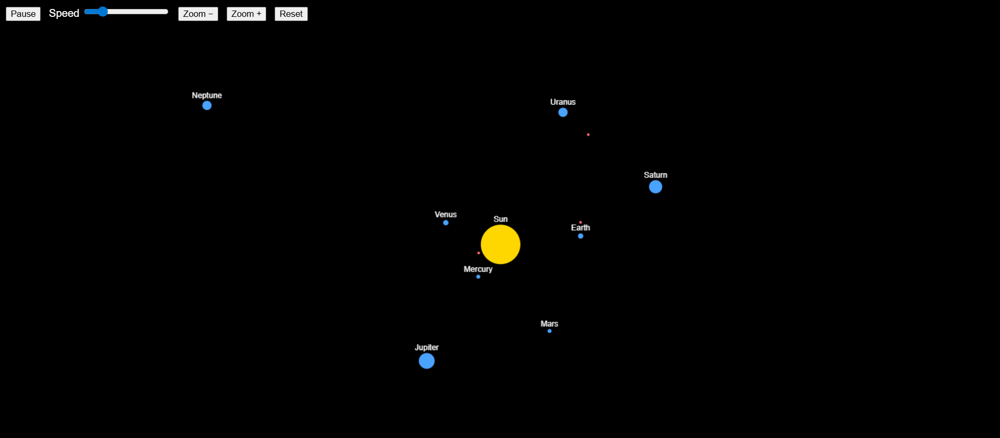

About
01About me
Senior at the University of San Diego, graduating this spring with a B.A. in Computer Science and a B.B.A. in Finance. My CS coursework has been about object-oriented design, test-driven development, and writing software with a team. Two recent projects are below.
Outside of class I've interned in growth equity, venture capital, audit, and corporate finance. The overlap of software and finance is where I want to keep working.
Project · COMP 305, Project 4 · Spring 2026
02Solar System Simulator
A browser-based simulation of our solar system. The Java backend computes gravity between bodies and streams the state to a web frontend over WebSocket. You can pause, change the time scale, zoom, and spawn spaceships with a click and drag.

Design highlights
Factory pattern
The SolarSystemFactory hides the physical constants behind a single call. The simulation just asks the factory for a fully formed solar system.
Observer pattern
The Simulation publishes frame state to any registered SimulationListener. The WebSocket server is one of those listeners, so the physics engine doesn't know or care that it's being viewed over the web.
Inheritance
AbstractBody is the base for CelestialBody (which is specialized into Planet and Star) and Spaceship. The simulation can treat every object uniformly while each type keeps its own behavior.
Encapsulation
Physical state (position, velocity, mass) lives on the bodies. Tick logic lives on the simulation. The web frontend only reads broadcasted state frames, never the model directly.
What I built
My responsibility was SolarSystemFactory and its test class, SolarSystemFactoryTest. The factory builds the Sun and planets with physically consistent positions, masses, radii, and velocities, then hands the initial state to the simulation.
I built it test first. The test class is a set of physical invariants the factory must satisfy:
planetsOrderedByIncreasingDistance: planets must be returned sorted by distance from the Sun.everyPlanetHasPositiveDistanceFromSun: no planet may share a position with the Sun.everyPlanetHasPositiveMassandeveryPlanetHasPositiveRadius: basic physical sanity checks.sunIsMoreMassiveThanEveryPlanet: the Sun has to dominate the system's mass.everyPlanetHasNonZeroVelocity: planets have to actually be moving.planetVelocityIsPerpendicularToPosition: the trickiest one. A planet's initial velocity has to be perpendicular to the vector from the Sun, otherwise the planet goes in a straight line instead of orbiting.
Each commit on my branch is one failing test plus the code to make it pass. The factory's correctness is locked in by the tests, not by eyeballing planets in the simulator.
Project · COMP 305, Assignment 3 · Spring 2026
03Elevator Simulator
A Java application that models a building's elevator system. There are four elevator types, each with its own rules for which floors to visit and which passengers to pick up, plus two scheduling strategies that decide which elevator answers a given call. The simulation runs round by round until every passenger has been delivered and all elevators are back on the ground floor.

Design highlights
The system is built around two interfaces, Movable and Scheduler. The simulator never knows which specific elevator or scheduler it's working with. Adding a fifth elevator type means writing one new subclass and changing nothing else.
Abstraction
The Movable and Scheduler interfaces define what elevators and schedulers can do without revealing how they do it. The Simulator only interacts through these interfaces.
Inheritance
All four elevator types extend the ElevatorUnit class, which holds the shared movement, floor tracking, pickup, dropoff, and return-to-ground behavior.
Encapsulation
Fields like currentFloor, occupancy, and assignedCalls are protected or private. Other classes interact via public methods and never touch internal state.
Polymorphism
The Simulator holds a List<Movable> and a Scheduler reference. At runtime, the correct canAcceptCall() and assignCall() behavior is dispatched based on the type of object.
What I built
I was responsible for three classes: ExpressElevator, PentHouseElevator, and the top-level Simulator.
-
ExpressElevator: the most complex elevator. Its acceptance logic has multiple conditions. Both the start and end floors have to be either the ground floor or in the top half of the building, and the call's direction has to match the elevator's current direction. I split the logic with booleans like
isStartValidandisEndValid. An empty Express Elevator is flexible enough to change direction to answer a call. An occupied one behaves like a standard elevator inside its valid zone. -
PentHouseElevator: the most restrictive elevator. It only travels between the ground floor and the top floor. I wrote helpers like
isValidPentHouseFloor()andisGroundOrTopFloor()to keep the conditional logic readable. It only accepts a call if both floors are valid and the elevator is completely empty with no pending calls. -
Simulator: the class that ties everything together. It reads command-line arguments, constructs the right scheduler and elevators, loads calls from a file, and runs the round-by-round simulation loop. I kept
run()clean by pulling logic out into helpers:isSimulationComplete(),moveAllElevators(), andprintRound(). Themainmethod delegates construction to factory-style static methods likecreateScheduler()andcreateElevators().
We worked test first throughout: tests first, then the minimum code to make them pass, one commit per test. Each class had its own branch and pull request. I requested changes on my partners' pull requests around direction handling, and they caught a boundary bug in my Express Elevator during their review.
Skills
04What I work with
Programming
Software practices
Finance and analytics
Contact